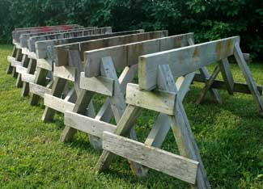

In the days when rafters, studs and joists were always cut with handsaws, a solid pair of sawhorses was essential for building. Even though power tools rule these days, sawhorses remain vital. Try trimming a sheet of plywood without them. Sawhorses also are indispensable for holding up planks while cutting them with a circular saw or for stacking materials up off the ground.
A wooden platform laid across a pair of sawhorses also makes a great raised work surface, portable workbench, log platform for use next to your firewood splitter, and even a table for cleaning fish and game. I use my sawhorses to support planks and make a temporary worktable while washing and trimming root crops for storage.
You’ll find dozens of models of sawhorses made of plastic, aluminum and steel, ranging in price from $20 to $80. Many are reasonably solid and fold conveniently for storage. The only common drawback is they’re not designed to be inadvertently cut with a saw as you slice plywood or other large pieces of materials that come in sheets.
Need a vise as well as a sawhorse? Look at the Superjaws, which have a vise built in. I have three of these and use them for everything from welding to holding pieces of wood for planing, carving or sawing.
If you want to save money and enjoy more hands-on construction, consider sawhorse brackets. These are made of metal or plastic for use with standard lumber you cut to length for the legs and body. They take care of the most troublesome part of building your own sawhorses - creating the all-important angled legs. Brackets also offer the chance to replace the body easily after the top edge gets too ratty from multiple saw blade cuts.
Building your own sawhorses entirely from scratch is a project of medium difficulty, but there’s no shortage of help available online. Home-built sawhorses can also be the most stable. Google “sawhorse plans” and dozens of free designs come up. Many of these are good, though there’s a common drawback. Most have legs angled in only one direction. This offers reasonable stability, though not the best. For best stability, you need to have legs splayed out in two directions - both side-to-side and out towards both ends. One of the rare online designs that incorporates this feature is found here.
Over the last 15 years, I’ve built a dozen sawhorses following my own design (see photo above or in the image gallery). Each one uses a 5-foot long 2-by-6 cross-member, with 2-by-4 legs and diagonal braces, and 1-by-4 cross-braces.
The best material for sawhorses also happens to be the cheapest: general-purpose, construction-grade lumber. It’s strong and plentiful, though there’s a hitch. This wood often splits easily when screws are driven into it. That’s why it’s essential to pre-drill screw holes, especially into the angled top ends of the legs. This doesn’t guarantee freedom from splitting, but it does minimize it.
Use 2 1/2-inch- and 3 1/2-inch-long weatherproof galvanized screws for assembly. They hold better than anything else, are easy to drive and won’t rust. You can also take screws out to reposition parts as you’re putting your sawhorses together. Take the extra trouble to apply weatherproof wood glue to all joints and your sawhorse will be stronger and last longer.
For another option, read The World's Best $6 Sawhorse. Do you have your own technique for building sawhorses? Share your ideas in the comments section below.
|
 STEVE MAXWELL There are dozens of uses for sawhorses. Are you sure you only want to build one pair? |
|
|